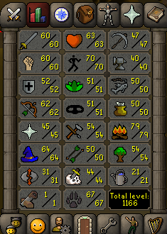
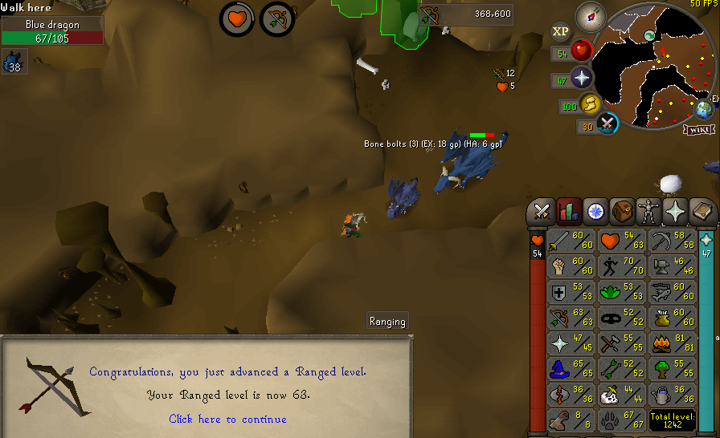
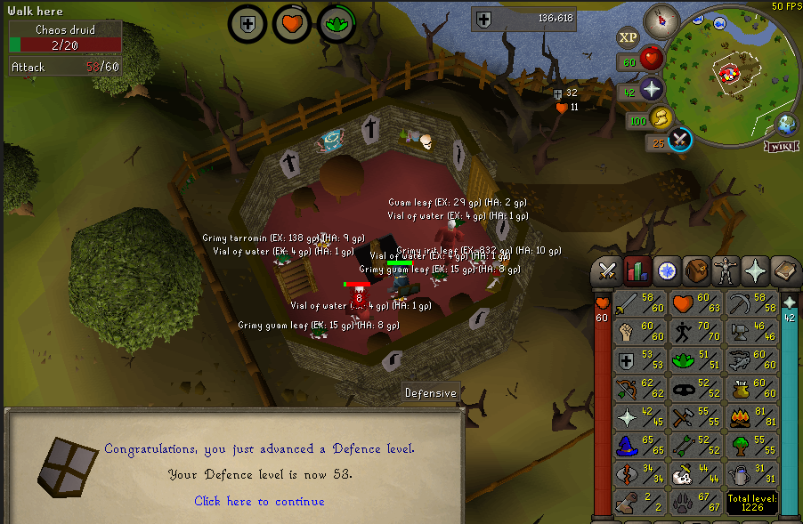

This is the earliest screenshot I have that shows my stats.

Early levels, not sure why I stopped firemaking at 79. I didn't get 99 until much later, but I think I just got burnt out by it.
Obviously did the standard early game quests for various combat xp, but I really struggled with GP. Looting Steel Plates in deep wildy and selling to the shop was 100% a viable method in my eyes at the time.
I did do H.A.M Store Rooms too for GP, which is probably how I got these magic levels. I would frequently farm Tree Spirits for Nature Runes, thieve H.A.M Store Rooms, alch, repeat.
Eventually I graduated to agility pyramid and never looked back.
I do remember grinding out 70 agility fairly early. I felt like the use of the agility pipe to the Blue Dragons in Taverly was worth the agility grind in the long run.  I made some Falador tele tabs and would range with a bone crossbow to get the 45 prayer early on. This was painfully slow.
I'm not sure what quests I had done by this point, as the earliest screenshot I have available is this one of the Family Crest @ 117 QP's.
And was only 30 or so total levels after the first screenshot at the top.
.png)
One thing that was actually quite enjoyable and something I would certainly repeat, was killing Chaos Druids in the Ardougne tower.
It was surprisingly really good early herblore xp, and stacked up very quickly.
It was also really easy combat training as they barely hit at all. Range and Melee stats trained here mostly until 60.
